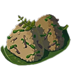

Veggie Rice Ball

Click for rice
back to index
Description
A great way to use up scraps from other recipies like
broccoli stems or part of a carrot. Just avoid oil or any
excess moisture, as it will keep the rice from forming a
shape.
Ingredients
- 4 servings steamed short grain rice (240ml/1cp dry, see
link above)
- 240ml (1cp) "Any Vegetable"
Steps
- Any measuring/cuttiing/pre-cooking. Vegetables should be
broken down to pea-sized morsels and tender enough to bite
easily.
- Be sure everything is cool enough to handle, fan/pat dry
for best rice adhesion.
- Mix rice and veg thouroughly. Use moistened clean hands to
press into fun shapes such as triangles.
- OPTIONAL: apply an edible wrap to help keep rice off hands
while eating. Try such options as nori (seaweed) or
tortillas (not the hard fried kind) or even lettuce. It's
yours to create and enjoy!
It's ready to eat!